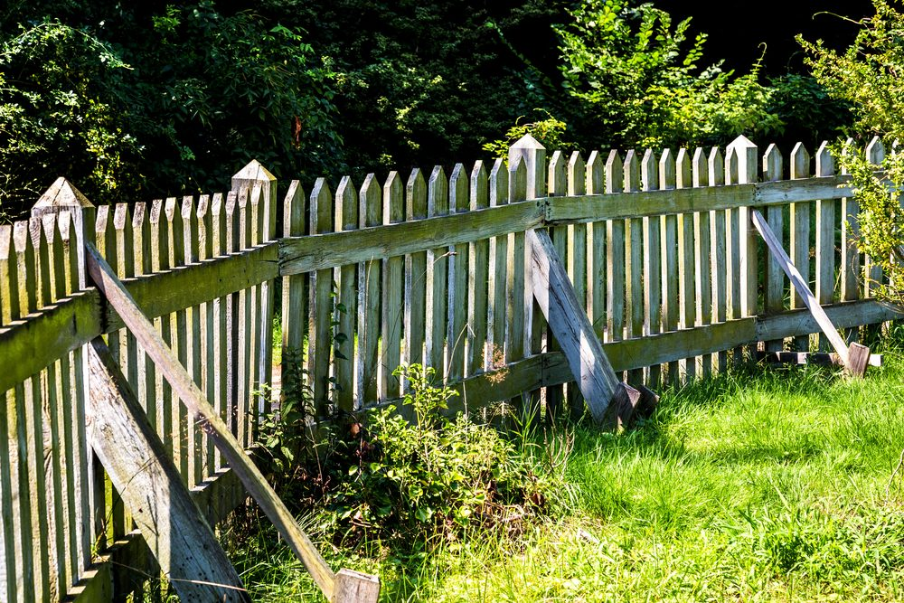

In This Guide
- Picket, privacy, shadow box, split rail, and louvered fences each solve a different problem, from curb appeal to full privacy to marking a large boundary.
- The style you pick sets the level of privacy and airflow, and the wood you pick sets how long it lasts.
- Wood fences need sealing, cleaning, and a check for rot in a humid place like New Orleans.
- Vinyl, metal, and chain link are alternatives when you want less upkeep than wood asks for.
Wood is the most flexible fence material there is. It can be a low white picket fence, a tall solid screen, or a rustic rail line, and it can be stained or painted to match the house. The hard part is picking the style that suits your yard, your privacy needs, and the amount of upkeep you are willing to do.
This guide from Big Easy Fence covers the main wood fence styles, how they differ, and what to think about before you choose one for a New Orleans property.
Why Homeowners Choose Wood
Wood looks natural, takes paint and stain well, and can be built in nearly any height and pattern. It suits a historic house as easily as a new build, and it offers privacy and security when you want them. The tradeoff is care. In a humid climate wood needs regular sealing and checks, which we cover near the end.
Popular Wood Fence Styles
Each style below does a different job. The table compares them, and the sections after it explain how they work.
| Style | Privacy | Best For |
|---|---|---|
| Picket | Low | Curb appeal and small yards |
| Solid Privacy | High | Backyards and pools |
| Shadow Box | Medium to high | Privacy with airflow |
| Louvered | Medium to high | Screening with ventilation |
| Split Rail | Very low | Large lots and boundary lines |
Picket Fences
The picket fence is the classic American fence. Evenly spaced vertical boards with pointed or rounded tops make an attractive border that still lets you see through the gaps. It keeps kids and pets in the yard and works with almost any paint color to match the house.

Solid Privacy and Board-on-Board Fences
A solid privacy fence uses tightly set boards, and a board-on-board version overlaps them so no gap opens up as the wood dries. Either gives you a full wall between your yard and the street or neighbor. Because it blocks so much, it also takes more wind load, so solid post footings matter.
Shadow Box Fences
A shadow box fence attaches boards to alternating sides of the rails. Straight on, it blocks most views, and air still passes through the overlap. It looks the same from both sides, which is a common courtesy for neighbors.
Louvered Fences
Louvered fences use angled slats, like a shutter. They screen the view from the street while letting breezes through, which suits a warm, humid climate. The angle of the slats decides how much privacy you get.
Split Rail and Paddock Fences
Split rail and paddock fences are horizontal rails between sturdy posts. They mark a boundary on a large property, and they suit farms, ranches, and rustic yards. They add character but almost no privacy, and small pets can slip through.
Matching a Style to a New Orleans Yard
Local weather should shape the style you pick as well as the color.
- Wind. A solid fence acts like a sail in a storm. Styles with gaps, such as shadow box and louvered, let some wind pass through and put less strain on the posts.
- Humidity. Airflow helps boards dry out after rain, which slows mildew and rot. Tight, solid designs hold moisture longer, so sealing matters even more.
- Heat and sun. Light stains reflect more heat and hide fading better than dark ones.
- Pets and kids. Picket and privacy styles contain them well, while a split rail leaves gaps they can use.
Choosing the Right Wood
The wood species affects durability, looks, and price. Cedar and redwood are known for resisting decay and insects, cypress is naturally rot-resistant, and pressure-treated pine is a budget-friendly choice that is treated to fight rot and pests. Higher-priced species tend to last longer with less upkeep. Our post on the type of wood fence that lasts the longest ranks these woods in detail.
When Wood Is Not the Best Fit
Wood is not the right answer for every yard. If you want less upkeep or a different look, other materials are worth a comparison.
- Vinyl. Low upkeep, resistant to rot and fading, and available in styles that mimic wood.
- Aluminum. Lightweight and sleek, with a powder coat that helps it resist corrosion.
- Steel. Strong and durable, though it needs attention to rust over time.
- Chain link. An inexpensive, easy-care option that offers little privacy on its own.
Our fence types page shows all of these side by side.
Keeping a Wood Fence in Shape
- Seal or stain on schedule. A protective finish is the best defense against moisture and sun.
- Clean it. Wash off dirt and mildew so it does not hold water against the boards.
- Inspect after storms. Check for loose boards, leaning posts, and soft spots at the base.
- Repair quickly. A cracked board is a small job until water gets into it.
Choosing Your Style
Start with what the fence has to do, then pick the style that does it. Privacy points to solid or board-on-board, airflow points to shadow box or louvered, charm points to picket, and a large boundary points to split rail. Then match the wood to your budget and your appetite for upkeep.
Our residential fencing team can show you how each style looks on a property like yours and give you a free estimate.
Common Questions
What Are the Types of Wooden Fences?
What Type of Wooden Fence Is Best?
What Are All the Types of Fencing?
What Style of Wood Fence Lasts Longest?
Which Wood Fence Style Fits Your Home?
Tell us what you want from the fence and we will help you match it to a style and a wood.